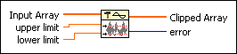
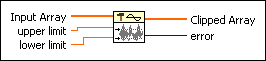
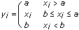

Y[i]=Clip{X[i]} VI
Owning Palette: Signal Operation VIs
Requires: Full Development System
Clips the elements of Input Array to within the bounds specified by upper limit and lower limit.

 Add to the block diagram Add to the block diagram |
 Find on the palette Find on the palette |
Owning Palette: Signal Operation VIs
Requires: Full Development System
Clips the elements of Input Array to within the bounds specified by upper limit and lower limit.

| Add to the block diagram |
Find on the palette |
 |
Input Array is the input array to be clipped. |
 |
upper limit must be greater than or equal to lower limit. The default is 1.0. If upper limit is less than lower limit, the VI sets the sequence Clipped Array to an empty array and returns an error. |
|
lower limit must be less than or equal to upper limit. The default is 0.0. |
 |
Clipped Array is the Input Array subjected to upper limit and lower limit. |
 |
error returns any error or warning from the VI. You can wire error to the Error Cluster From Error Code VI to convert the error code or warning into an error cluster. |
Let the sequence Y represent the output sequence Clipped Array. Then the elements of Y are related to the elements of Input Array by

for i = 0, 1, 2, …, n – 1,
where n is the number of elements in Input Array, a is the upper limit, and b is the lower limit.